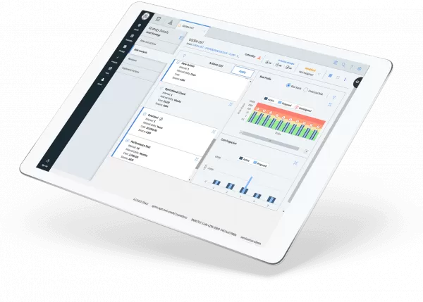

Predictive Maintenance Software
Industrial machines and equipment are vital for many businesses, but they can also pose significant challenges and risks. Breakdowns, malfunctions, and inefficiencies can result in high maintenance costs, reduced productivity, poor quality, and safety hazards. Predictive maintenance software is a key solution to overcome these challenges and achieve industrial excellence. Predictive maintenance software uses sensors, data, analytics, and artificial intelligence to collect and analyze information from machines and equipment, such as temperature, vibration, sound, and lubrication. By detecting anomalies and patterns, predictive maintenance software can predict the future state of machines and equipment and determine the optimal time and method for maintenance. This way, predictive maintenance software can prevent failures before they occur, while minimizing maintenance costs and frequency.
Predictive Maintenance Software result
3-40%
EH&S incident reduction
2-6 %
Increased availability
10-40%
Reduction in reactive maintenance
5-10%
Inventory cost reduction
Enable continuous improvement with PMS solutions

Lower maintenance costs
Predictive maintenance software can reduce labor, material, and energy costs by avoiding unnecessary or excessive maintenance activities.
Longer equipment life:
Predictive maintenance software can extend the lifespan of machines and equipment by preventing wear and tear and optimizing performance.
Higher production quality:
Predictive maintenance software can improve the quality and consistency of products by ensuring that machines and equipment operate within optimal parameters and specifications.
Less downtime:
Predictive maintenance software can reduce the risk of unplanned outages and disruptions by fixing problems before they escalate and cause damage.